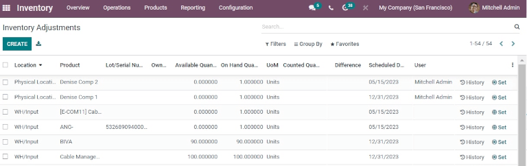
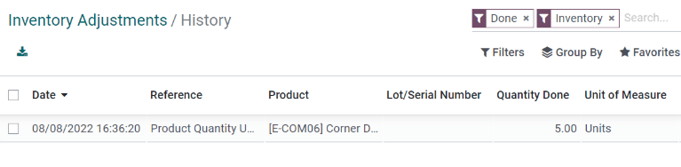

Ajustes de inventario¶
En cualquier sistema de gestión de almacén es posible que los números registrados del inventario en la base de datos no sean los mismos que los verdaderos números en el almacén. Esta discrepancia se puede deber a robo, daños, errores humanos u otros factores. Por lo tanto, se tienen que realizar ajustes de inventario para conciliar las diferencias y asegurarnos de que los números registrados en la base de datos sean los mismos que los número del almacén.
Página de ajustes de inventario¶
Para ver la página de Ajustes de inventario vaya a .
La página de Ajustes de inventario muestra todos los productos que están en existencias. Cada línea contiene la siguiente información:
Ubicación: la ubicación específica dentro del almacén donde los productos se guardaron.
Producto: el producto cuya cantidad se enlista en la línea de ajuste de inventario.
Número de lote/serie: el identificador que se le asigna a un producto en específico. Puede contener letras, números o ambos.
Nota
Si un producto específico tiene en existencias una cantidad mayor a 1.00 y se le asignó más de un número de serie o de lote, cada producto identificado de manera única se mostrará en su propia línea de producto, con su propio lote o número de serie en la columna Número de lote/serie
Cantidad a la mano: la cantidad del producto que está registrada en la base de datos.
UdM: la unidad de medida con la que se mide el producto. La unidad predeterminada corresponde a Unidades a menos que especifique lo contrario (por ejemplo, libras u onzas).
Cantidad contada: la cantidad real contada durante un conteo de inventario. Este campo se deja vacío de forma predeterminada, pero puede cambiarlo, esto depende de si coincide con la cantidad disponible o no.
Diferencia: la diferencia entre la Cantidad a la mano y las Cantidades contadas después de que se hicieron los ajustes de inventario. La diferencia se calcula de manera automática después de cada ajuste de inventario.
Fecha prevista: la fecha en la que se debe de realizar un conteo. Esta fecha siempre será el 31 de diciembre de manera automática a no ser que se especifique lo contrario.
Usuari: la persona a la que se le asignó el conteo en la base de datos. Puede ser tanto la persona que físicamente está contando el inventario, o solo la persona que aplica el número en la base de datos.
Categoría del producto: la categoría interna que se le asignó e un producto específico. La categoría del producto es, en automático, Todo, a no ser que usted especifique otra (como Consumible o Alquiler).
Cantidad disponible: la cantidad de un producto específico de la que puede disponer según órdenes de venta, de compra o de fabricación que estén pendientes o no se hayan terminado. Esta cantidad puede cambiar una vez que se cumplan con estas órdenes.
Fecha contable: la fecha en la que todos los ajustes se tomarán en cuenta dentro de la aplicación Contabilidad de Odoo.
Empresa: en qué empresa se están haciendo los ajustes de inventario. El nombre de la empresa está en la esquina superior derecha de la base de datos, junto al nombre de usuario.
Truco
Algunas columnas se ocultan de manera predeterminada. Para mostrar estas columnas haga clic en el botón opciones adicionales (el icono de tres puntos) que se encuentra en la parte superior derecha del formulario. Para seleccionar la columna que quiere mostrar solo haga clic en la caja que se encuentra a un lado de esa opción.
Crear un ajuste de inventario¶
Haga clic en crear para crear un nuevo ajuste de inventario desde la página . Al hacer esto aparecerá una nueva línea de ajuste de inventario completamente en blanco en la parte inferior de la página.
En esta línea en blanco, haga clic en el menú desplegable que se encuentra en la columna titulada Producto y seleccione un producto. Si el producto que seleccionó se rastrea ya sea con lotes o números de serie, también puede seleccionar el número de lote o de sere desde el menú desplegable en la columna llamada Lote/Número de serie.
Después, en la columna Cantidades contadas ponga la cantidad que se contó para ese producto durante el proceso de ajuste de inventario.
Nota
Las cantidades contadas para los nuevos ajustes de inventario siempre están configuradas con 0.00 de forma predeterminada. En el historial de ajustes de inventario del producto se registra un movimiento de inventario en la cantidad hecha, así que se debería reflejar en la cantidad contada.
En la derecha de la columna Cantidades contadas también puede cambiar la Fecha programada y el Usuario con sus respectivos menús desplegables. Si cambia la Fecha programada, cambiará la fecha en que se procesará el ajuste de inventario y si selecciona un usuario responsable, lo asignará a un ajuste de inventario específico (por motivos de trazabilidad).
Ya que se hayan hecho todos los cambios a la nueva línea de ajuste de inventario, haga clic en un lugar afuera de la línea. Así guardará el ajuste y la línea se moverá a la parte superior de la página.
Si el número en las cantidades contadas es mayor que el número en Cantidad a la mano, el valor en la columna Diferencia será verde. Si las cantidades contadas son menores que la cantidad a la mano, el valor en la columna Diferencia es rojo. Si las cantidades son iguales y no se han cambiado en absoluto, la columna Diferencia no mostrará valor alguno.
En esta etapa, el conteo (ajuste de inventario) se registra pero no se aplica. Esto significa que la cantidad a la mano antes del ajuste no se ha actualizado y no será la misma que la cantidad real contada.
Hay dos formas de aplicar un nuevo ajuste de inventario. La primera es dar clic en el botón Aplicar que se encuentra en la línea completamente a la derecha de la página. La segunda manera es dar clic en la casilla de confirmación que se encuentra a la izquierda de la línea. Después de esto aparecerán nuevos botones de opciones en la parte superior de la página, uno de los cuales es el botón Aplicar. Después de hacer clic a este botón aparecerá una ventana emergente de Referencia/razón del ajuste de inventario.
Puede agregar una referencia o un motivo para el ajuste de inventario con este menú emergente. El campo Referencia/motivo de inventario incluye la fecha en la que se hizo el ajuste de forma predeterminada, pero puede modificarlos para que sean otros.
Una vez que esté listo, haga clic en Aplicar para aplicar el ajuste de inventario
Conteo de productos¶
Una vez que termine de contar los productos dentro de un almacén, vaya a para actualizar la columna cantidades contadas para cada línea de producto.
En cada línea de producto debe identificar si el valor registrado en la columna Cantidad a la mano de la base de datos coincide con el valor que acaba de contar. Si el valor registrado y el que contó coinciden, haga clic en el botón Establecer button (es un icono de diana) a la derecha de la línea de productos.
Esto hará que el valor que está en la columna Cantidad a la mano se copie en la columna Cantidades contadas, además de que hará que el valor de la columna Diferencia sea 0.00. Ya que se aplicaron estos cambios, se registrará un movimiento de inventario de 0.00 en la columna Cantidad hecha del historial de ajustes de inventario del producto.
Si el valor que acaba de contar para un producto no coincide con el valor que registró en Cantidad a la mano dentro de la base de datos, en lugar de hacer clic en el botón Establecer, registre el valor del campo en la columna Cantidades contadas.
Para hacerlo, haga clic en el campo de la columna Cantidades contadas en la línea de ajuste de inventario del producto del que tiene que cambiar el valor. De esta manera se asignará una Cantidad contada de 0.00.
Escriba el nuevo valor que coincide con el valor que acaba de contar. Después, haga clic fuera de la línea para guardar el ajuste y que el valor en la columna Diferencia cambie de forma automática.
Si el número en las cantidades contadas es mayor que el número en Cantidad a la mano, el valor en la columna Diferencia será verde. Si las cantidades contadas son menores que la cantidad a la mano, el valor en la columna Diferencia es rojo. Si las cantidades son iguales y no se han cambiado en absoluto, la columna Diferencia no mostrará valor alguno.
Después, se registrará un movimiento con la diferencia entre la cantidad a la mano y las cantidades a la mano en el historial de ajustes de inventario del producto.
Importante
Alguna veces hacemos un conteo de inventario que no podemos registrar en la base de datos de inmediato. En lo que podemos registrar la nueva cuenta en la base de datos, es posible que ocurran movimientos de inventario. Esto hará que la cantidad a la mano en la base de datos cambie y ya no sea consistente con la cantidad contada. Es por eso que Odoo pregunta antes de aplicar un ajuste de inventario como precaución.
Cambiar la frecuencia de los recuentos de inventario¶
La fecha programada automática para los ajustes de inventario siempre será el 31 de diciembre del año en curso. Sin embargo, para algunas empresas es esencial tener un conteo de inventario actualizado en todo momento. La fecha programa se puede cambiar para estos casos.
Para cambiar la fecha programada automática, vaya a . Después, en la sección Operaciones busque la opción Día y mes del inventario actual, donde verá un menú desplegable en el que la opción 31 de diciembre estará seleccionada de manera automática.
Para cambiar el día solo haga clic en el 31 y cámbielo a un número, tendrá la opción de elegir del 1 al 31 dependiendo del mes del año que quiera.
Para cambiar el mes haga clic en December y podrá ver el menú desplegable con los meses.
Ya que haya realizado todos los cambios deseados, haga clic en guilabel:Guardar.
Planeación de recuentos de inventario grandes¶
Para planear recuentos de inventario a escala, como un recuento completo de todo lo que hay en existencias, primero debe ir a la .
Para seleccionar los productos que volverá a contar seleccione el recuadro a la derecha de cada línea de producto.
Truco
Para solicitar un recuento de todos los productos que actualmente se encuentran en existencias, haga clic en el cuadro que está hasta arriba de la tabla, en la hilera del encabezado junto a la columna Ubicación. Esto hará que se seleccionen todas las líneas de producto
Ya que seleccionó todos los productos, haga clic en el botón Solicitar un recuento que encontrará en la parte superior de la página. Al hacer esto, obtendrá una ventana emergente para Solicitar un recuento, donde tendrá que llenar la siguiente información:
Fecha de inventario: la fecha en la que se programó el recuento.
Usuario: la persona encargada de realizar el recuento.
Fecha contable: la fecha en la que se registrará el ajuste de inventario.
Número: seleccione Dejar en blanco para dejar la cantidad disponible de cada línea de producto vacía o seleccione Establecer valor actual para completar el valor de la cantidad disponible de cada línea de producto con el valor que está registrado en ese momento en la base de datos.
Ya que esté listo todo, haga clic en Confirmar para solicitar el recuento.
Importante
En la aplicación Código de barras los usuarios solo pueden ver los recuentos de inventario que se les asignó a ellos y que están programados para hoy o para antes de hoy.
Ver también